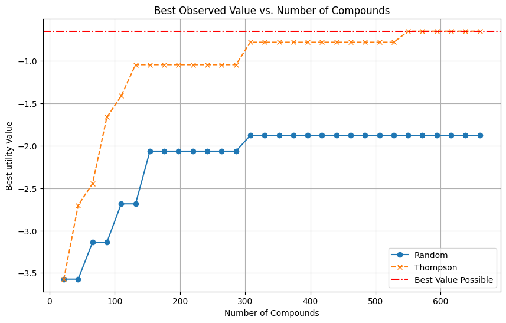

Accelerate Virtual Screening in Drug Discovery
with Neural Diffusion Search


Outline
- Protein-ligand docking with Diffusion Models
- Active Virtual Screening
- Incorporating Chemical Intuition
Overview

Overview: Streamlining Virtual Screening with Advanced Techniques
Challenges:
- Training efficient docking models with limited resources.
- Conducting virtual screening within budget constraints.
- Incorporating multiple objectives beyond affinity.
Solutions:
- Enhance docking model through diffusion model.
- Optimize ligand selection through active screening.
- Utilize a neural search engine for multi-objective screening.
Outline
- Protein-ligand docking with Diffusion Models
- Active Virtual Screening
- Incorporating Chemical Intuition
1. Diffusion Model: Noise to pattern
Diffusion models are a type of machine learning model used to generate data by starting with noise and gradually creating a meaningful pattern.
1. Diffusion Model: Why used for docking?
Why Use Diffusion Models for Molecules?

1. Diffusion Model: Training Data
The PDB database is limited:
- Contains only ~17,000 protein-ligand pairs.
- Features around 5,000 unique proteins.
For robust diffusion model training, millions of diverse data points are needed. Data augmentation enhances:
- Ligand Diversity: Broader chemical structure and property range.
- Protein Diversity: Wider variety of binding sites for better model generalization.
Data augmentation techniques create a richer dataset, boosting model performance.
1. Diffusion Model: Training Data
Data Augmentation Techniques:
- Molecular Dynamics: Employed 59,330 dynamic frames of 14,387 protein-ligand complexes to model ligand flexibility, amounting to 75K training data.
- Data Crawling: Curated 322K protein-ligand complexes, yielding 80K unique proteins.
- Pharmacophore Alignment: Generated up to 11M pharmacophore-consistent ligand pairs, significantly expanding the ligand training data.

Figure 1: MD Simulation Trajectories

Figure 2: Pharmacophore Modeling
1. Diffusion Model: Results
Benchmark on Posebusters Dataset: Posebusters: Version 1 (428 structures) and Version 2 (308 structures), released post-2021 in PDB. Performance: % of ligand pairs with $RMSD < 2 Å$ in pocket alignment.

1. Diffusion Model: Results
Benchmark on Posebusters Dataset:
1. Diffusion Model: Neural Search for Docking
Traditional docking tools are slow, limiting the efficiency of application of virtual screening.
- Traditional Tools (e.g., Glide, Smina): ~15mins per pose
- Chai (AlphaFold3-like): ~2 mins for 5 poses (7.5x faster)
- Our Diffusion Model: ~5s for 64 poses (180x faster)
1. Diffusion Model: Improve Speed with Local Docking
Our approach works with both blind and local docking, with local docking being 2.5x faster than blind docking and 450x faster than Glide while still retanining accuracy.

1. Diffusion Model: Next steps
- Improve on performance of diffusion model to reach SOTA level (i.e finetuninig AlphaFold3 variants)
Outline
- Protein-ligand docking with Diffusion Models
- Active Virtual Screening
- Incorporating Chemical Intuition
2.Virtual Screening: Overview
For a given protein linked to a certain disease, the goal of virtual screening is to select a few small molecules (i.e., ligand) from a library of millions candidates such that the selected candidate will have the highest utility in disease treating.

3. Active Virtual Screening
Even with the right trade-off objective elicited from expert, exhaustively screening millions of candidate from the virtual screening library is practically infeasible. To address this problem, we can choose to screen ligand that looks promising, while avoid ligand that are highly certain to be a bad candidate.
3. Active Virtual Screening
To prioritize high-potential ligands, we use Bayesian Optimization, an approach that balances exploring new candidates and exploiting known promising ones to efficiently find optimal solutions.
- Surrogate model: Gaussian Process, Neural Net, Random forest
- Acquisition function: UCB, Greedy, Thompson sampling
3. Active Virtual Screening: Contrained settings
In virtual screening, our goal is to find effective ligands efficiently. Traditional methods can be slow, especially with large, diverse libraries. If identified ligands are too structurally unique, they may be difficult or impossible to synthesize for chemists. By using constrained settings, we can focus on ligands with desirable features that are also more likely to be synthetically accessible.
3. Active Virtual Screening: Contrained settings
Using constrained settings, we can limit our search to clusters of chemically similar ligands, increasing the speed and accuracy of our screening while reducing computational demands.

3. Active Virtual Screening: Evaluation Metrics
Metrics for evaluation
Percent of Best Ligand Found
- Definition: Percentage of screened ligands close in affinity to the best possible ligand. ($top_k \%$)
3. Active Virtual Screening: Screening Results


3. Active Virtual Screening: Next steps
- Run virtual screening on bigger library (100k, 1M) compounds
Outline
- Protein-ligand docking with Diffusion Models
- Active Virtual Screening
- Incorporating Chemical Intuition
4.Eliciting Chemical Intuition: Overview
In drug discovery, selecting candidate ligands goes beyond targeting high-affinity molecules. Experts use their deep chemical intuition to balance competing properties such as synthesizability, solubility, and potential side effects. This approach ensures ligands are not only effective but also practical and safe for therapeutic use.
4.Eliciting Chemical Intuition
Depending on the specific disease and protein, experts have intuition about characteristics of candidate ligands, trading off various objectives such as synthesizability, affinity, solubility, and side effects.


4.Eliciting Chemical Intuition
These implicit expert knowledge, encoded as preferences over ligands, are valuable to elicit for effective virtual screening. We can leverage toolkits from the field of machine learning from human preferences to tackle this challenge.
| First ligand | Second ligand | Preference $(x_1 \succ x_2)$ |
|---|---|---|
| [-7.81, 114.38, 0.51] | [-8.12, 116.28, 0.47] | 0 |
| [-10.45, 186.17, 0.29] | [-8.12, 116.28, 0.47] | 1 |
| [-6.18, 35.32, 0.83] | [-8.12, 116.28, 0.47] | 0 |
Each ligand is represented by a set of features, such as affinity, polar surface area, QED drug-likeness score
4.Eliciting Chemical Intuition
The latent utility function $f$ can be modeled using various approaches. One popular choice is the Gaussian Process (GP), a non-parametric Bayesian method that defines a distribution over possible functions.
4.Eliciting Chemical Intuition
Learning GP Classifier can be done with standard machine learning toolbox such as scikit-learn.
For example, when the synthetic oracle is the Auckley function, we obtain 85% train and test accuracy.

Synthetic Auckley function
4.Eliciting Chemical Intuition: Process
Learning chemical intuition is done in a close-loop, where the computer interacts with the chemist in an active manner. Starting with distribution over function $f$ condition on the current data, $p(f | D)$, our procedure includes 4 iterative steps:
Step 1: Sample two candidate utility: $f_1 \sim p(f|D), f_2 \sim p(f|D)$Step 2: Find the best ligand under each utility function:
$$x_1 = \arg\max_{x \in \mathcal{L}} f_1(x), x_2 = \arg\max_{x \in \mathcal{L}} f_2 (x)$$
Step 3: Present the two candidate ligands $x_1$ and $x_2$ to the expert to obtain preference $y$.
Step 4: Update the model in the present of new data $\mathcal{D} \leftarrow \mathcal{D} \cup {(x_1, x_2, y)}$.
4.Eliciting Chemical Intuition: Synthetic results
Observed accuracy plot for high-dimensional data with objectives: QED, affinity, polar surface area, and molecular weight.
4.Eliciting Chemical Intuition: Next Steps
- We aim to collaborate with experts in the lab to understand their latent utility preferences via pairwise preference elicitation for virtual screening applications.

Incorporating chemists' intuition into the virtual screening loop.
5. Conclusion
- Enhance docking speed to achieve 8x faster performance than the current SOTA.
- Conduct active virtual screening on a library of 7,000 compounds, achieving a success rate of ~25%.
- Develop a synthetic function to test multi-objective preferences and identify top compounds.
6. Next steps
- Improve our virtual screening experiments so it's realistic (i.e., multi-objectives)
- Build on top of state-of-the-art models such as AlphaFold3
- Test on real data (e.g., from Glenn's lab)